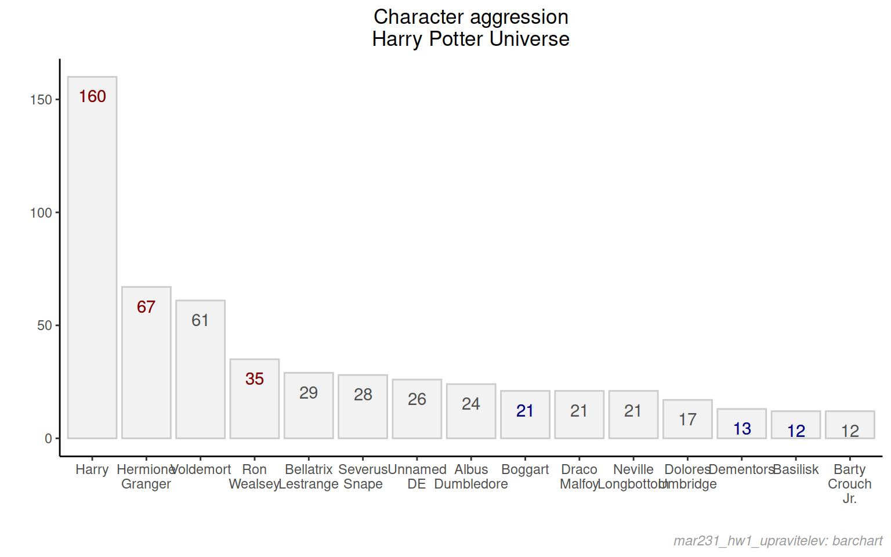
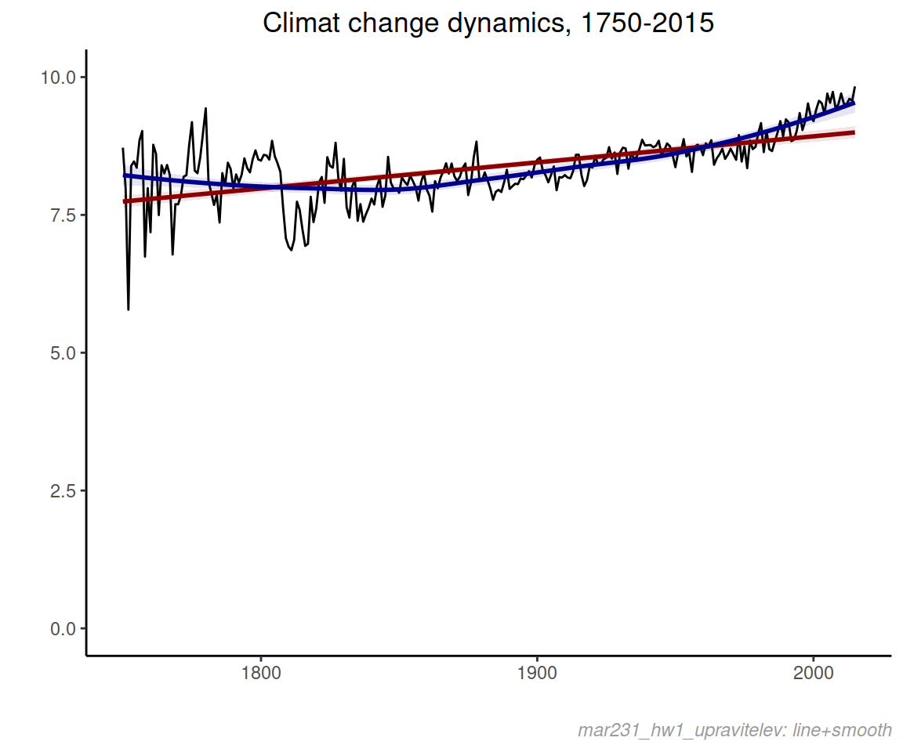

HW 1
Общие замечания
Срок сдачи работы: 26 ноября 2023 включительно.
Домашнее задание должно быть выполнено в виде R-скрипта или Rmd-скрипта c чанками, кому что удобнее.
Свой файл с кодом решения назовите по структуре
mar231_hw1_<ваша фамилия латиницей>.Rmdилиmar231_hw1_<ваша фамилия латиницей>.Rи пришлите в личных сообщениях в mattermostСтарайтесь комментировать каждую значимую строчку кода (т. е., в которой происходит сложное или не очень прозрачное преобразование). Комментарии нужны, в первую очередь, для того, чтобы вы могли продемонстрировать, что понимаете, что и зачем делаете. Если некоторые операции однозначны и очевидны, комментарии можно опустить. В частности, при подключении пакетов можно ограничиться одним комментарием ко всем командам подключения пакетов. Если используете какое-то выражение или функцию, которое нагуглили, объясните, зачем и приложите ссылку.
Соблюдайте гайд по стилю оформления кода и/или используйте автоформатирование RStudio (ctr+shift+A на выделенном коде для Win/*nix). Отсутствие комментариев, неопрятность и/или нечитаемость кода, несоблюдение конвенций гайда по стилю — на все это я буду обращать внимание и, в случае существенных помарок, снижать оценку на один балл.
Выполняйте задание самостоятельно. Если у меня возникнут затруднения в объективной оценке, то договоримся о созвоне и я попрошу прокомментировать то или иное решение, или же дам небольшое задание из аналогичных, чтобы сравнить стиль решения.
Если при выполнении задания все же возникнут какие-то вопросы - можете спросить меня (все вопросы в mattermost: либо в личке, либо в канале ~random). Не гарантирую, что отвечу максимально подробно, но дать минимальную подсказку или прояснить неясность задания постараюсь.
Все задания основаны на уже пройденных нами материалах, ничего запредельно сложного для вас быть не должно. Некоторые моменты могут потребовать гугления, но это минимально. Функции, примеры и алгоритмы можно найти на сайте в материалах. Если вы не знаете, как подступиться к задаче — попробуйте ее разложить на подзадачи, цепочку операций.
Для того, чтобы не писать полный адрес к файлам данных, файлы должны лежать в той же папке, что и R/Rmd-файл, который использует эти файлы. Тогда импортировать можно без указание пути, просто через указание названия файла и его расширения. Например,
my_fun_import('file_to_import.csv').Я рассчитываю, что вы будете использовать в работе какой-то один стиль синтаксиса - data.table (которому я вас учил), либо data.frame / tidyverse — если вы в них чувствуете себя комфортно. Пожалуйста, если вы не планируете использовать data.table, сообщите мне это заранее.
Если вы увереннее чувствуете себя в Python, можете выполнить задание в нем (также скажите об этом заранее). Но тогда будьте готовы к тому, что я могу попросить созвониться и прокомментировать какие-нибудь выражения из вашего решения.
Пожалуйста, избегайте зоопарка пакетов и стилей. Чем меньше используется пакетов и чем согласованнее по стилю и лаконичнее код – тем лучше.
Задание 1. Дома в Игре престолов.
импорт данных
Импортируйте датасет по персонажам Game of Thrones (ссылка на файл: https://gitlab.com/hse_mar/mar221s/-/raw/master/data/character-predictions_pose.csv).
Назовите таблицу got_chars
чистка данных
Замените пустое название Дома (house == ’’) на Unknown.
Удалите строки, в которых возраст отрицательный (age < 0).
график численности кланов
Создайте из got_chars объект got_chars_bar, где будет статистика по количеству людей в клане, а также по количеству мужчин и женщин.
Нарисуйте в ggplot2 или plotly барчарт по количеству членов в клане, возьмите первые 10 домов по численности, включая 'Unknown'. Для того, чтобы на графике бары были отсортированы, сначала надо отсортировать датасет по убыванию по количеству членов в клане. После этого выполнить это выражение:
# делаем название клана в две строки
got_chars_bar[, house := gsub('\\s+', '<br>', house)]
# задаем сортировку домов
got_chars_bar[, house := factor(house, levels = house)]Если рисуете в plotly - добавьте ховер (hover) с информацией о названии клана, количестве членов в клане, количестве мужчин и количестве женщин в клане. Если используете ggplot2 — добавьте какую-нибудь тему не по умолчанию и заголовки графика и осей.
Дополнительно: удалите кнопки plotly (Zoom/Autoscale и т.д.). Выполнение этого пункта на оценку не влияет.
Задание 2. Агрессивность персонажей в книгах о Гарри Поттере.
Импортируйте файл aggressive_actions.xlsx. Вам потребуются данные с листа DataSet. Объект с данными с листа назовите actions.
По возможности напишите код так, чтобы исключить ручное скачивание файла на диск и потом импорт в R, т.е. сделать все средствами R.
В датасете есть орфографическая ошибка, Ron Wealsey вместо Ron Weasley. Исправьте это.
Отсортируйте по убыванию колонки tot, и возьмите первые 15 строк. Выполните следующие два выражения. Попробуйте проинтерпретировать смысл этих действий, что значат аргументы функций (на оценку наличие/корректность интерпретации не влияет).
actions[, names_ordered := gsub('\\s+', '\n', name)]
actions[, names_ordered := factor(names_ordered, levels = names_ordered)]Воспроизведите график ниже. Цвет заливки - grey90, цвет контура - grey85. Каждый бар должен быть подписан (количество действий), значение должно размещаться на области бара, чуть ниже, но не касаясь верхней границы бара, цвет текстовых меток - grey30. Выделите цветом darkred метку количества действий персонажей Золотого Трио (Harry, Hermione Granger, Ron Weasley). Выделите цветом darkblue метку количества действий тварей (creature == 1). Заголовок в две линии (вспомните про разделители линий в операционных системах, мы про это в ETL-блоке говорили), ориентация по центру.
Добавьте на график и отформатируйте caption. Содержание подписи - ваша фамилия, курс и тип графика, по аналогии с mar231_hw1_upravitelev: barchart. Параметры подписи: face = "italic", color = 'grey60', смещения задайте самостоятельно.

Задание 3. Динамика среднегодовой температуры в период 1750-2015
Импортируйте файл global_temperature.csv: https://gitlab.com/hse_mar/mar221s/-/raw/master/data/global_temperature.csv. По возможности исключите ручное скачивание файла на диск.
Создайте из даты dt переменную года (назовите ее year). Для этого можно воспользоваться функцией year() пакета data.table, или же любым другим методом на ваше усмотрение. Подсчитайте среднюю температуру в год (колонка температуры LandAverageTemperature). У вас должен получиться файл с колонками year и temp_mn, где temp_mn - средняя температура за год.
Воспроизведите график среднегодовой температуры. Добавьте линии трендов (методы loess и lm). Прозрачность диапазона равна 0.1, цвета - darkred и darkblue. Ваш график не должен вводить в заблуждение по поводу величины вариации между разными годами.

Корректное выполнение этого задания в plotly — плюс 1 балл к оценке (можно без caption, только график и линии трендов). Функцией ggplotly() пользоваться нельзя.